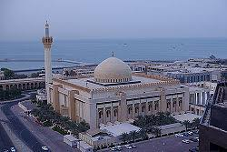

المسجد الكبير
مسجد الدوله الكبير
هو مسجد يقع في مدينه الكويت قرب شاطذ الخليج العربي أُفتتح عام 1986
بناء على توجيهات من الشيخ جابر الاحمد الصباح
بدأ العمل فيه عام 1979
وتم افتتاحه عام 1986 ساهم في بنائه خمسون مهندسا واربعمائه وخمسون عامل
صمم المسجد الكبير المهندس المعماري "محمد صالح مكيه
"
واختار تصميمه على الطراز الاندلسي الفاخر وتبلغ مساحته 45الف متر مربع

يتكون المسجد من اجزاء عديده تؤدي بدورها من تناسق وايقاع ، فهي من جهه مجموعه لا تكاد
توجد في اي مسجد اخر وهو يشتهر اكثر شي بوجود اكثر من مصلى وهم البيت الرئيسي،
المصلى اليومي ،مصلي الحريم
ومن صمن الغرف الاخرى الموجوده في المسجد
- المحراب
- المنبر
- المئذنه
- صحن المسجد
- المكتبات
- قاعات الدراسه